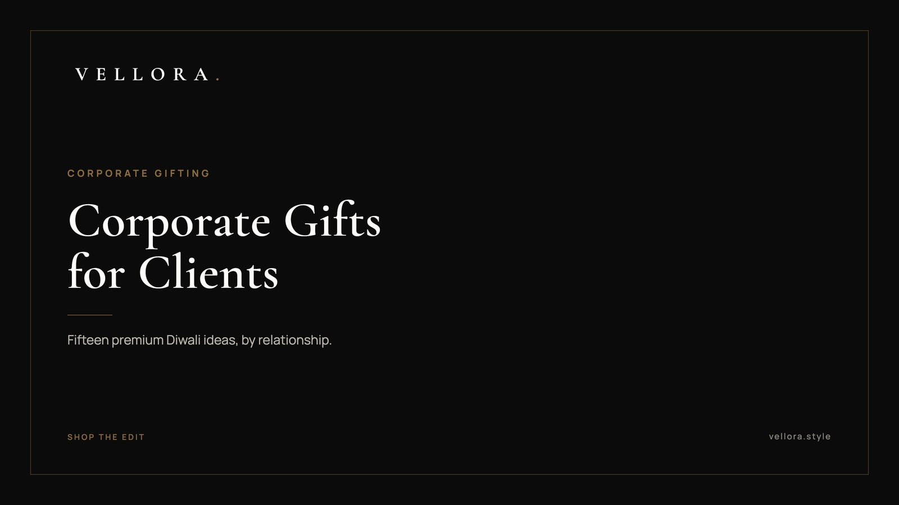

CORPORATE GIFTING
Best Corporate Gifts for Clients: 15 Premium Diwali Ideas
By Vansh Shah, Founder

- Match the gift to the relationship. A key account, a new client and a long-standing partner each call for a different level of gesture.
- One well-made piece a person keeps using says more than a large hamper that is gone in a week.
- Check the recipient's gift policy before you choose. Many firms set limits or ask staff to declare gifts.
- Start a bulk Diwali order early. Personalization and packaging add steps, so plan around Dussehra rather than Diwali week.
- Keep branding quiet. A small, discreet mark reads as thoughtful. A large logo reads as marketing.
The best corporate gifts for clients are the ones that stay in use long after the festival. A watch worn on a Monday morning. A leather bag carried to every meeting. A pair of sneakers that becomes the weekend default. When we put together the best corporate gifts for clients, we look for exactly that: a piece the person would have picked for themselves, given at the right moment, with no loud branding attached.
Diwali is the moment most Indian businesses say thank you, and the gift you choose says a lot about how you see the relationship. This guide sorts the best corporate gifts for clients into three groups: key accounts, new clients and partners. Each group gets five ideas, most of them pieces from the Vellora edit, so you can see the exact item before you decide. We also cover how to choose, how bulk ordering works in general terms, and what to give your own team. If you only need the short version, the best corporate gifts for clients are personal, useful and understated, and the details below help you get there. For the full program, see our page on luxury corporate gifts in India.
How to choose the best corporate gifts for clients
Start with the relationship, not the catalog. Ask three plain questions.
- How close is the relationship? A ten-year account can receive something personal. A client you signed last quarter should get something warm but not intimate.
- What does the recipient's company allow? Many organizations cap gift value or ask employees to declare what they receive. A gift that creates paperwork for the recipient is not a kind gift.
- Will they actually use it? A watch suits someone who wears one. A structured bag suits someone who travels for work. Guessing wrong means the gift sits in a drawer.
After that, think about tone. Quiet luxury works well in business because it does not ask for attention. Neutral colors, clean shapes and small logos travel well across age, gender and seniority.
Gifts for key accounts
These are the relationships that carry your year. The gift should feel personal and considered, and it should be something they keep.
1. A yellow gold dress watch
The 1908, reference 52508 is a 39 mm watch in 18 ct yellow gold with a polished finish. It is slim, formal and calm. For a senior decision maker who dresses classically, it is the most personal gift on this list.
2. A day and date watch in yellow gold
The Day-Date 40, reference 228238, is a 40 mm yellow gold watch on an Oyster case. A day-date display shows the day of the week as well as the date, which is useful for someone whose calendar never stops. It suits a founder or chairperson who already appreciates fine watches.
3. A travel watch with a GMT function
For a client who flies often, the GMT-Master II, reference 126710GRNR is a 40 mm watch in Oystersteel. A GMT complication adds a 24-hour hand so the wearer can track a second time zone at a glance. Steel also reads less formal than gold, so it works across more of their week.

4. A structured leather bag for the boardroom
The Vendome PM is a structured bag that holds its shape. For a senior client who carries documents and a tablet to meetings, it reads polished without being showy.
5. A spacious everyday tote
The OnTheGo PM is a tote with room for a working day. It suits a client who moves between office, airport and home and wants one bag that handles all three.
Gifts for new clients
A new relationship calls for warmth with some restraint. The gift should feel generous, but not so personal that it creates an awkward moment.
6. A solar chronograph
The Seiko Prospex Speedtimer Go Large Solar, SSC915P1 is a sporty chronograph. Solar watches charge from light, so the owner rarely has to think about the battery. It is a confident gift that does not overstep.
7. A second solar chronograph with a racing feel
The Seiko Prospex Circuit Race Solar, SSC941P1, carries a motorsport theme. It suits a client who likes cars or design, and pairs well with idea 6 if you are gifting two people at the same company and want them to feel equal.
8. Clean leather sneakers
The LV Trainer Sneaker in blue is a low-top with a smart, sporty line. Sneakers work for clients in creative or tech businesses, where suits are rare and a good pair gets worn every week. Confirm the size discreetly through their assistant first.
9. A slim shoulder bag in a neutral color
The Kate Spade Slim Shoulder Bag comes in several colors, including black, tan and white. That range is useful when you are gifting a small group and want each person to receive the same piece in a shade that suits them.
10. A compact crossbody for travel days
A small crossbody is the bag that goes everywhere: airports, site visits, dinners. The Gucci Round GG Crossbody comes in ivory, silver and black, which keeps the choice simple for a new client whose taste you are still learning.
Gifts for partners
Partners sit somewhere between client and colleague. The best gifts here recognize a shared year of work and feel a little more relaxed.
11. A trunk-shaped shoulder bag with character
The LV x TM Side Trunk MM has a compact, structured trunk shape. It is a good fit for a partner with a strong personal style, someone who would enjoy a piece with a story.
12. A carryall for weekends away
The CarryAll PM is a soft, roomy bag that moves easily between work and travel. It suits a partner who spends weekends on the road and appreciates something practical that still looks refined.
13. A sneaker in a deeper tone
The LV Trainer Sneaker in Marine is a darker take on the same shape. Navy tones hide wear and pair easily with denim or chinos, so it suits a partner with a relaxed wardrobe.
14. A top handle bag with a sculpted line
The Jacquemus Top Handle Handbag comes in a wide range of colors, from black and tan to burgundy. It is a modern, design-led pick for a partner who notices shape and proportion.

15. A matched pair for a founding duo
When a partner firm is run by two people, give them a matched set: two solar chronographs, or two bags from the same family in different colors. The gesture says you see them as a team, and it avoids any sense that one person was ranked above the other.
The 15 ideas at a glance
| # | Idea | Best for | Why it works |
|---|---|---|---|
| 1 | 1908 yellow gold dress watch | Key accounts | Personal, formal, kept for years |
| 2 | Day-Date 40 | Key accounts | Practical day and date display |
| 3 | GMT-Master II | Key accounts | Tracks a second time zone for travelers |
| 4 | Vendome PM | Key accounts | Structured, boardroom ready |
| 5 | OnTheGo PM | Key accounts | Carries a full working day |
| 6 | Seiko Speedtimer Solar | New clients | Light powered, low maintenance |
| 7 | Seiko Circuit Race Solar | New clients | Sporty, pairs with idea 6 |
| 8 | LV Trainer, blue | New clients | Worn weekly in relaxed offices |
| 9 | Kate Spade Slim Shoulder Bag | New clients | Many colors for group gifting |
| 10 | Gucci Round GG Crossbody | New clients | Compact travel companion |
| 11 | LV x TM Side Trunk MM | Partners | Distinctive, has a story |
| 12 | CarryAll PM | Partners | Work and weekend in one bag |
| 13 | LV Trainer, Marine | Partners | Darker tone, easy to wear |
| 14 | Jacquemus Top Handle Handbag | Partners | Design led, wide color range |
| 15 | Matched pair | Partners | Treats a founding duo equally |
Diwali corporate gift ideas and timing
Most Diwali corporate gift ideas fail on timing rather than taste. Even the best corporate gifts for clients lose their effect when they arrive late. In 2026, Dussehra falls on Tuesday, 20 October, Dhanteras on Friday, 6 November and Diwali on Sunday, 8 November. Many Indian firms place their bulk Diwali orders around Dussehra, and we suggest the same. It leaves room for personalization, packaging and delivery to several offices.
Diwali gifts for corporate clients should arrive before the festival week, while people are still at their desks. A gift that lands during the holiday often sits unopened in a mailroom. For clients outside India, the same quiet pieces work as diwali gift ideas for clients who may not celebrate the festival themselves. A short note explaining the occasion keeps the gesture clear. Teams in Pune and Hyderabad can see our local programs for corporate gifting in Pune and corporate gifting in Hyderabad.
Bulk ordering: lead time, personalization and packaging
Bulk orders follow a simple sequence. The details vary by piece and quantity, so treat this as a planning outline rather than a schedule.
- Lead time. Start with a confirmed list of recipients and a short list of pieces. Availability differs by item and color, so lock the list first and confirm stock before you commit to a plan. The earlier you start, the more choice you keep.
- Personalization. A handwritten card is the safest touch and suits every piece. Engraving or monogramming, where a piece allows it, adds steps and cannot be undone, so confirm spelling and placement twice.
- Packaging. Choose one calm, consistent presentation for the whole order. Neutral boxes, a simple ribbon and a printed card read as considered. Avoid oversized hampers that hide the gift itself.
- Delivery list. Collect full names, office addresses and a contact for each recipient early. Missing details slow everything down.
Teams searching for personalized luxury gifts in India often over-brand. A small card with your company name is enough. The piece should feel like a gift to the person, not an advertisement for the sender.
Best corporate gifts for employees
Your own team deserves the same care. The best corporate gifts for employees are fair, useful and consistent across the group, so no one compares and feels left out.
- Pick one category and offer a choice of colors or sizes, rather than different gifts at different levels.
- Reserve watches for milestones such as long service or a leadership role, where a personal piece is expected.
- Sneakers and everyday bags work well for younger teams who will use them weekly.
For larger groups, the bag edit and the color range on pieces like the Kate Spade Slim Shoulder Bag make it easier to treat everyone equally. Getting the best corporate gifts for employees right is mostly about consistency. We, the Vellora team, are happy to help you plan an edit that fits your list.